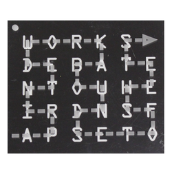
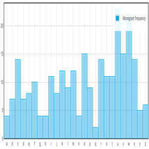

What Is A Route Cipher
Route ciphers have many more keys than a rail fence. In fact, for messages of reasonable length, the number of possible keys is potentially too great to be enumerated even by modern machinery. However, not all keys are equally good. Badly chosen routes will leave excessive chunks of plaintext, or text simply reversed, and this will give cryptanalysts a clue as to the routes.
Different Versions

A variation of the route cipher was the Union Route Cipher, used by Union forces during the American Civil War. This worked much like an ordinary route cipher, but transposed whole words instead of individual letters. Because this would leave certain highly sensitive words exposed, such words would first be concealed by code. The cipher clerk may also add entire null words, which were often chosen to make the ciphertext humorous.
Problems
The Route Cipher is easy to use to jumble up a message very quickly. It has some problems depending on what route you pick as you can end up with large chunks of plaintext in the right order within the ciphertext (or simply reversed) which gives away alot about the width of the grid and the route used. Careful selection of the route is important.
Implementation
The main functionality of the Route Cipher is reading and following the shape which forms the path. The implementation versions will differ, depending on the types of used paths. To encrypt the message, the first step is to create a grid of one dimension determined by the secret key, and the second dimension depended on the data size. The parties must also agree which dimension (width or height) is described by the secret key, and in what way the grid will be filled with plaintext letters (row by row, or column by column). If some cells in the grid remain empty, one of two possible approaches should be taken: